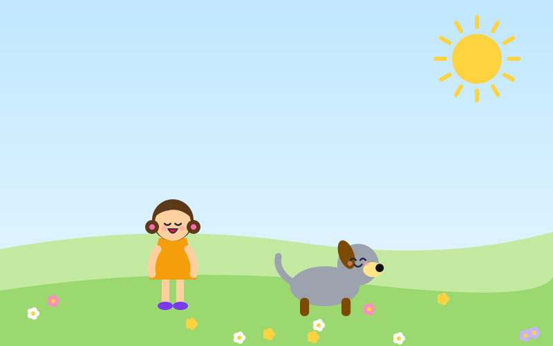
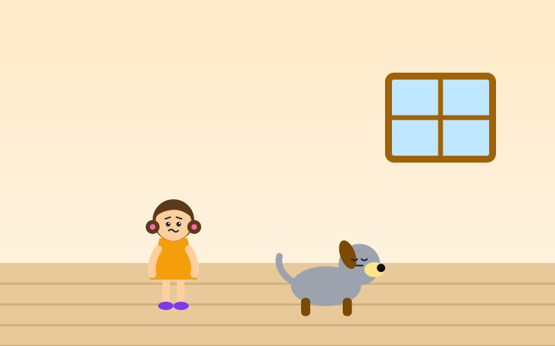
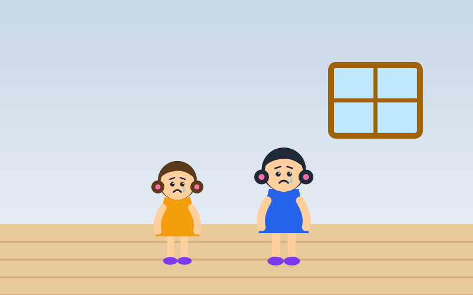
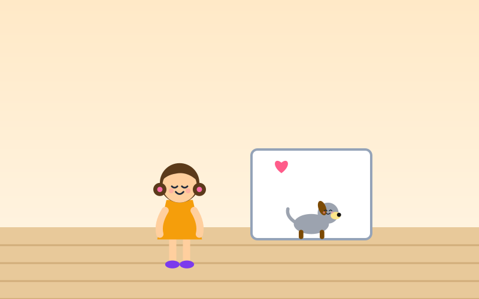
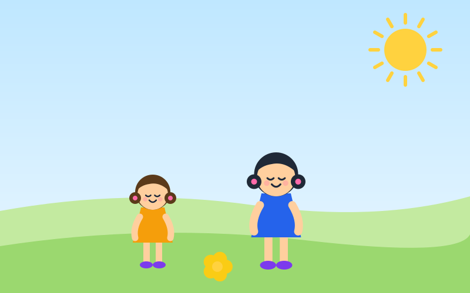
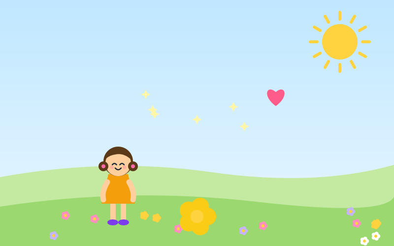

Ana tenía un mejor amigo: Lucho, un perro viejito de orejas grises. Juntos regaban las flores del jardín y él siempre movía la cola al verla.
—¡Buenos días, Lucho! —decía Ana cada mañana.

Lucho estaba muy viejito. Cada día caminaba más despacio y dormía más. Una mañana, papá le contó a Ana que Lucho había muerto mientras dormía.
—Su cuerpo ya estaba muy cansado. No sufrió —le explicó papá con voz suave.

Ana lloró mucho. Sentía un huequito en el pecho. También se enojó, y a veces preguntaba si Lucho iba a volver.
—Lucho no va a volver, mi amor. Está bien llorar y extrañarlo. Yo también lo extraño —dijo papá, y la abrazó fuerte.

Los días siguientes, Ana dibujó a Lucho y le escribió una carta. Papá y ella recordaron las cosas chistosas que hacía. A veces se reían, y a veces lloraban un poquito.
—Recordarlo me pone triste y feliz a la vez —dijo Ana.

Juntos plantaron un girasol en el lugar favorito de Lucho. Lo llamaron «el jardín de los recuerdos».
—Cada vez que lo riegues, piensa en algo bonito de Lucho —dijo papá.

El girasol creció alto y amarillo. Ana todavía extraña a Lucho, pero ahora, cuando lo recuerda, sonríe más de lo que llora.
—Te llevo en mi corazón, Lucho —susurró Ana.
Cuando alguien que queremos se va o muere, es normal sentir tristeza, enojo o confusión. Llorar, hablar de lo que sentimos y recordar con cariño nos ayuda. No tienes que pasarlo solo: los adultos que te quieren te acompañan, y quienes amamos siguen vivos en nuestros recuerdos.